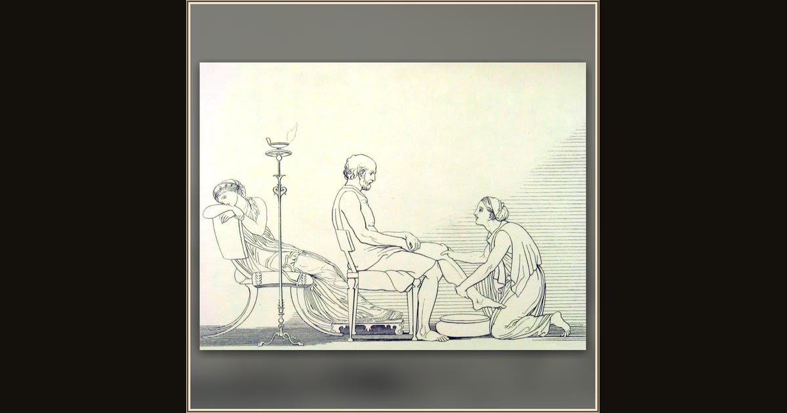

Eurycleia Recognizes Odysseus
John Flaxman · 1810 · Wikimedia Commons
Eurycleia feels the scar; Athena diverts Penelope, who misses the recognition (19.467–79). Explore its place in Book XIX of the Odyssey.

John Flaxman · 1810 · Wikimedia Commons
Eurycleia feels the scar; Athena diverts Penelope, who misses the recognition (19.467–79). Explore its place in Book XIX of the Odyssey.